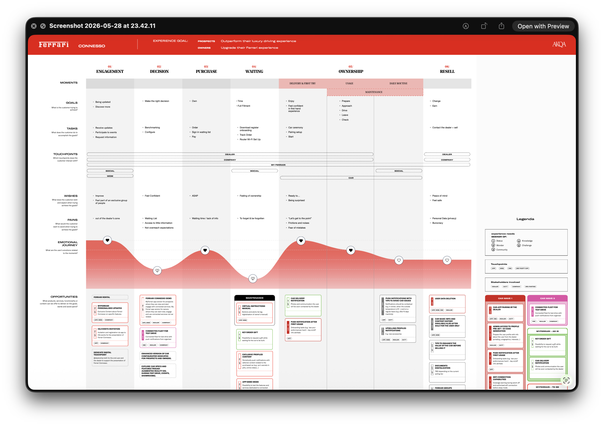
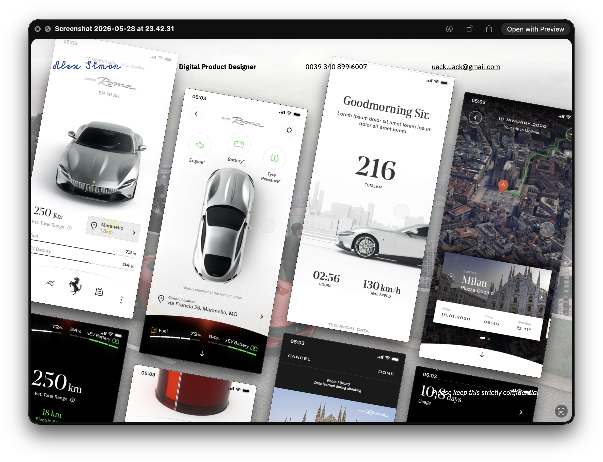

AKQA Milan · 2019–2020
The Purosangue was still a list of desired hardware when we joined. No screens designed, no experience defined, just engineering specs and an open question: what should owning a connected Ferrari actually feel like?

Ferrari's first SUV was also their first serious push into connected car. The starting material was a list of 83 features written by car engineers. Our brief was to represent UX and CX in those early conversations, to make sure the hardware decisions didn't close doors before the experience had been defined.
What does a Ferrari owner actually need this car to do, and what hardware decisions would make that impossible?
What they didn't have was a way to apply that standard to software decisions. The feature list needed to be evaluated on owner terms, not engineering terms.
We built a framework: five criteria per feature (customer benefit, use frequency, WOW factor, brand coherence, distinctiveness), validated against three voices: clients, market, and the business. Each feature scored. Each cluster assigned to a release tier: Minimum Viable, Minimum Valuable, Minimum Delightful.
It was a decision-making tool that Ferrari could own. The same rigour they applied to a suspension system or a body line, now applied to whether a remote diagnostics feature belonged in Wave 1 or Wave 3.
The easy move was to manage down expectations, say yes. We didn't. The relationship was under strain. We pushed back where it mattered, because a client who hired you for your judgement stops trusting you the moment you start reflecting their assumptions back at them.
Once Ferrari trusted us, the question changed from what should the app do, to where does ownership actually happen.
Two very different audiences shared the same car: traditional owners tracking performance data after every trip, a newer segment buying Ferrari as a design and lifestyle statement. Both moved through the same rhythm before every drive: check the car is ready before you reach the garage. That shared moment shaped the architecture.
We designed the vehicle-readiness feature by working directly with Ferrari's car engineers to connect component telemetry to the app. Not a reactive alert, but a proactive status that addressed the number one owner complaint: car unavailability at first use. Eight Ferrari owners tested it. It rated highest of any feature in Sprint 1.
We created a design fiction video of the full ownership journey. That wasn't in the brief. We made it necessary.
Prototype and spec delivered on time for RFP. More projects followed: preowned website, dealer website, and others, each more UX-driven than the last. The collaboration is ongoing.
The Purosangue launched in 2022. The connected experience we shaped in those early rooms was part of it.
